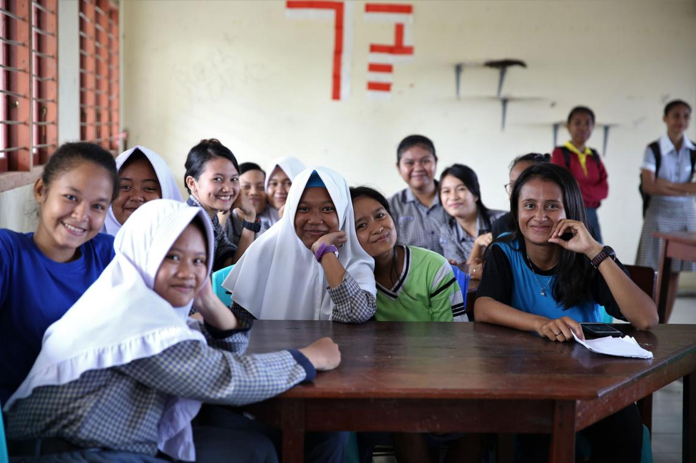

Anak-anak merupakan aset yang sangat berharga bagi bangsa. Karenanya, pemerintah harus melindungi dan memenuhi hak anak. Konvensi Hak Anak dan Undang-Undang Perlindungan Anak menegaskan, anak-anak memiliki empat hak dasar. Yakni hak untuk hidup, hak untuk tumbuh dan berkembang, hak untuk dilindungi baik dari sisi kekerasan, eksploitasi, demikian juga perlakuan salah lainnya dan hak untuk partisipasi.
Saya Lansir dari Unicef
Intimidasi dan dipermalukan adalah hal yang biasa terjadi di sekolah-sekolah, dengan 18 persen anak perempuan dan 24 persen anak laki-laki terpengaruh. Anak laki-laki terutama menghadapi risiko serangan fisik di sekolah.
Guru sering menggunakan hukuman fisik dan emosi untuk mendisiplinkan anak-anak. Mereka juga tidak memiliki pengetahuan dan keterampilan untuk mengenali dan melaporkan kekerasan dan merujuk siswa ke layanan untuk mengatasi masalah yang mereka alami.
Anak perempuan remaja cenderung lebih rentan terhadap praktik tradisional yang berbahaya seperti perkawinan anak dan mutilasi alat kelamin perempuan (FGM) dibandingkan anak laki-laki. Satu dari setiap sembilan anak perempuan menikah sebelum usia 18 tahun, dan anak-anak perempuan dari keluarga termiskin lima kali lebih mungkin menikah pada usia sangat dini dibandingkan teman-teman mereka yang lebih kaya. Tingkat mutilasi alat kelamin perempuan (FGM) masih tinggi, yaitu 52 persen.
Perkawinan anak, selain melanggar hak-hak anak dengan memaksa mereka berhenti sekolah, juga mengakibatkan kemiskinan antargenerasi, merusak pendidikan jangka panjang mereka, kemampuan untuk mencari nafkah, dan ironisnya juga dapat bertambah jumlahnya.
Di sisi hukum, kekerasan terhadap anak belum dilarang dalam semua pengaturan (perkosaan dalam pernikahan masih diizinkan), dan sistem keadilan untuk anak-anak belum memprioritaskan perlindungan bagi semua anak yang berurusan dengan hukum.
Anggaran pemerintah didedikasikan untuk melindungi anak-anak dari kekerasan hanya kurang dari 0,1 persen dari total anggaran. Prosedur administrasi publik yang kompleks dan kurangnya kewenangan yang diamanatkan untuk perlindungan anak mengakibatkan kesulitan dalam menyediakan layanan yang efektif untuk anak-anak yang rentan. Selain itu, sekitar 17 persen anak-anak di bawah usia 18 tahun tidak memiliki akta kelahiran, yang menyebabkan mereka sulit untuk mengakses layanan utama.
Anak merupakan tahapan yang harus dilalui oleh setiap orang menuju usia dewasa. Pada tahapan ini, anak memiliki sistem penilaian yang berbeda dengan sistem penilaian orang dewasa. Seorang anak memiliki sistem penilaian yang sifatnya kekanak-kanakan yang akan menampilkan anak dalam kedudukannya tersendiri. Sejak lahir seorang anak telah menampilkan tingkah laku dan kepribadian yang khas dan unik. Karena itu, sifat anak dan keadaan psikologisnya dalam beberapa hal memerlukan perlakuan khusus dan perlindungan khusus pula, terutama terhadap tindakan-tindakan yang pada hakekatnya dapat merugikan perkembangan mental maupun jasmaniah anak.
Pentingnya seorang anak memperoleh perlindungan yang memadai tidak hanya berguna bagi diri anak itu sendiri melainkan juga bagi kehidupan bangsa secara umum, mengingat seorang anak adalah tunas, potensi, dan generasi muda penerus cita-cita perjuangan bangsa. Karena itu tidak berlebihan apabila eksistensi bangsa dan negara secara relatif digantungkan pada diri anak. Apabila anak (perorangan maupun kelompok) suatu bangsa terancam maka eksistensi suatu bangsa pun ikut terancam pula. Oleh karena itu, perlakuan terhadap anak perlu dibedakan dengan perlakuan terhadap orang yang telah berusia dewasa, termasuk pada saat seorang anak harus menghadapi proses hukum.